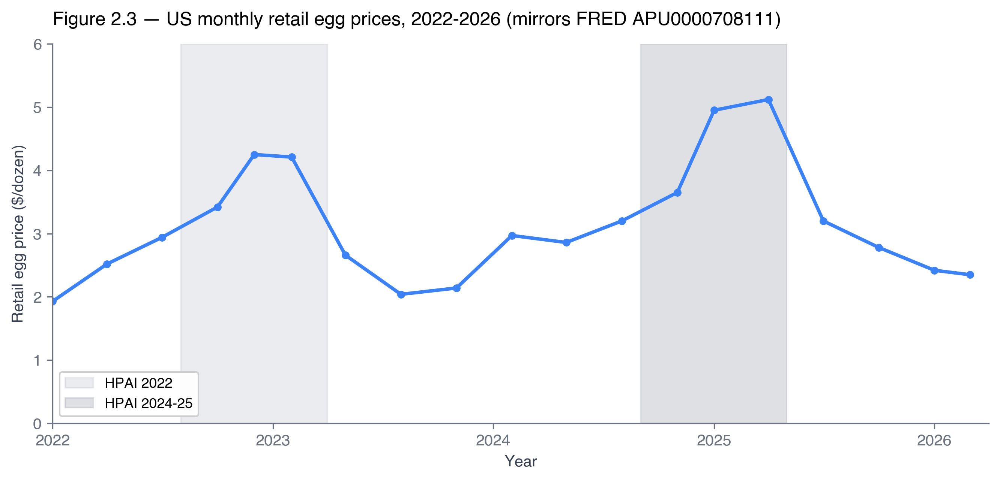
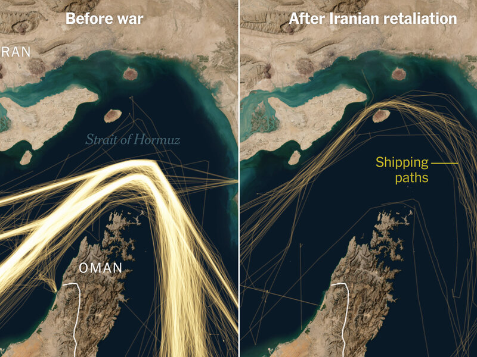
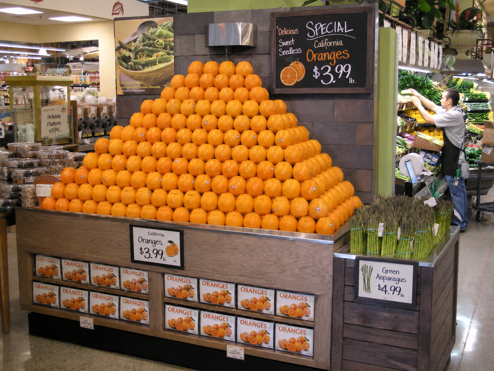
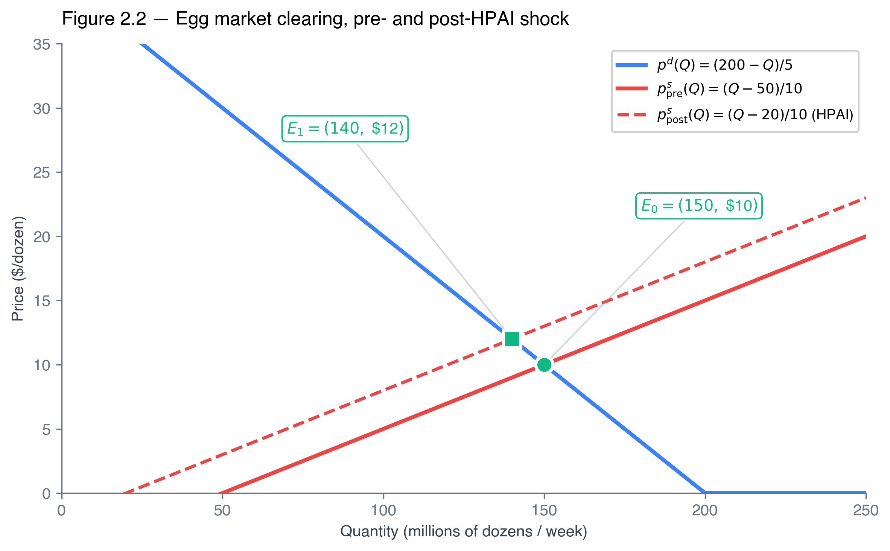
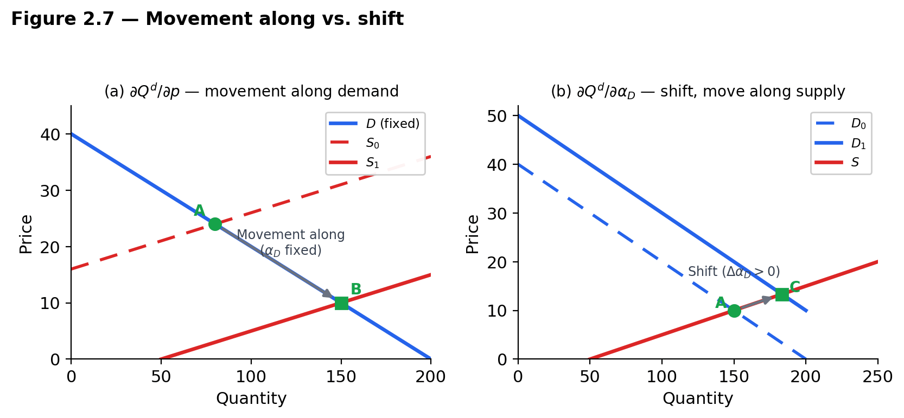
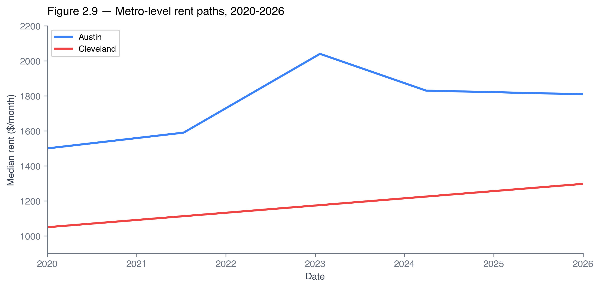
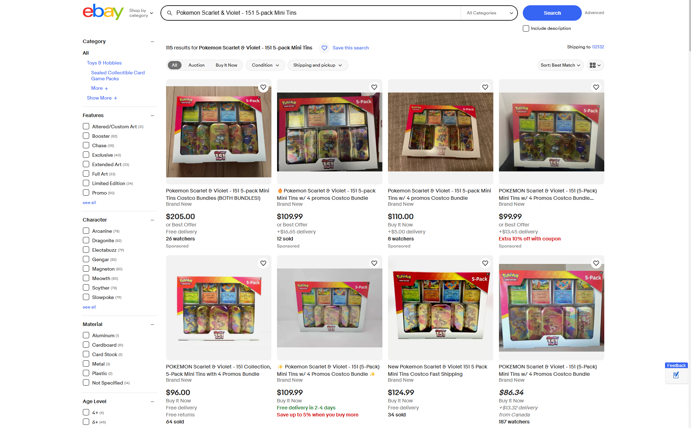
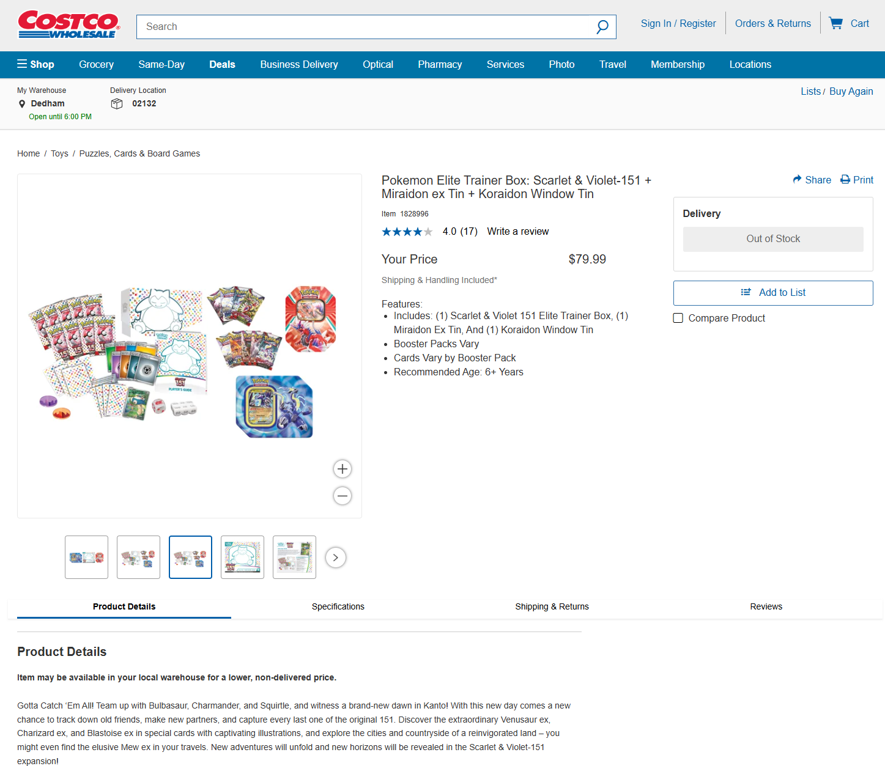
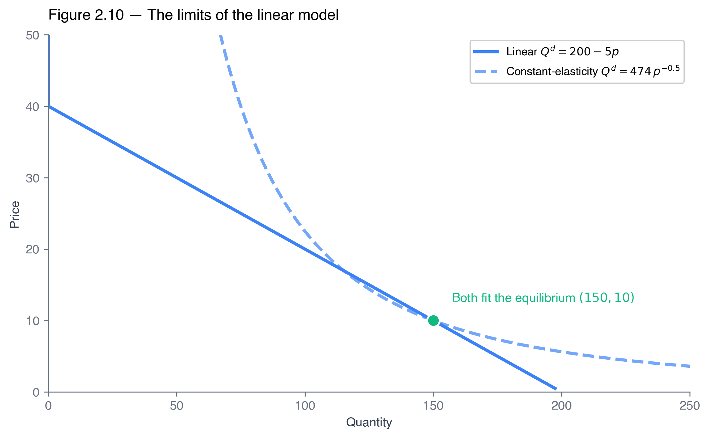

From graphs to algebra — functions, integrals, and total differentiation.
Dr. Richeng Piao
Department of Economics
Northeastern University — 100 min
Learning Objectives
By the end of class today, you will be able to…
2.1
Express
demand and supply as functions \(Q^d(p; \alpha_D)\) and \(Q^s(p; \alpha_S)\); solve a linear market for \(p^*\) and \(Q^*\) algebraically.
(Bloom L3)
2.2
Compute
consumer and producer surplus as integrals; recognize the triangle as the linear special case.
(Bloom L3)
2.3
Derive
comparative statics \(dp^*/d\alpha\) and \(dQ^*/d\alpha\) via total differentiation; sign both.
(Bloom L4)
2.4
Distinguish
"movement along" from "shift of" a curve as different partial derivatives; diagnose press headlines.
(Bloom L4)
2.5
Critique
linear-market predictions in light of constant-elasticity alternatives (preview of Ch 3).
(Bloom L5)
The Grocery Manager in Spring 2026
A category manager at a Midwestern supermarket chain prices her egg shelf for Q3 2026.
FRED APU0000708111 — US retail egg price.
• Pre-2022 baseline: \$1.50–\$2.00
• January 2025 peak: \$4.95
• April 2025: \$5.12
• March 2026: \$2.35
Principles told her the direction. Her buyers want a number: where does the cost-of-goods line land in September?
Today's three tools: algebra, integrals, total differentiation.
The background.
Avian influenza (HPAI) tore through US flocks 2022–early 2025, culling ~168 million laying hens. A replacement pullet needs 18–20 weeks to lay, so supply couldn't rebound fast — the shock hit price, not quantity. Through 2026 the flock rebuilds and prices slide toward baseline (the Walkthrough 2.5 recovery).

§2.1 Demand and Supply as Functions
12 min · Promoting curves to functions, with names and shifters
What is a Market — and What Does the Model Assume?
Before promoting demand and supply to functions, pause on the noun that anchors the chapter.
A market is defined by THREE things
Product type
— eggs,
not
"agricultural goods"
Geographic scope
— US wholesale,
not
global
Time horizon
— a week of clearing,
not
a decade of structural change
The chapter's apparatus clears
one
such market at a time. The same firm sells in many distinct markets at once.
Three modeling assumptions
1. Homogeneous good
— every Grade A large dozen interchangeable. The good is a
commodity
(eggs, wheat, copper, crude). Not a Picasso.
2. Single price + shared info
— all participants pay/receive the same price; share info on prices, qualities, substitutes.
3. Many buyers and sellers
— none large enough to move price alone.
Chs 11–14 study what breaks when this fails.
All three together = a
perfectly competitive market
. These are
approximations, not literal claims
. The right question isn't "are they true?" (no) but
"close enough that the model's predictions track the data?"
— for commodities and broad consumer goods, usually yes; for markets with serious pricing power, no → Ch 11.
The Homogeneous-Good Assumption — Where It Holds, Where It Breaks
Assumption 1 up close. When buyers treat every seller's unit as interchangeable, no single seller can charge above the market price — the market clears at one price. When perception diverges from chemistry, the assumption breaks.
Holds — eggs & gasoline
A Grade A large dozen is a Grade A large dozen; 87-octane is 87-octane — Shell, Speedway, Mobil.
Shell 87
\$4.25
Speedway 87
\$4.18
Buyers pick on price within a few cents — the single-price clearing of §2.2 is a good approximation.
Breaks — branded aspirin
Identical chemistry — 325 mg of acetylsalicylic acid. Different shelf, very different price.
CVS brand
\$1.14
/ 100 tabs
Bayer
\$6.29
/ 100 tabs
5× the price for the same molecule — brand perception lets Bayer set its own price.
When the homogeneous-good assumption breaks → market power. The single-price model of §2.2–2.4 is an approximation that holds for commodities (eggs, gasoline, copper) and fails where differentiation hands a seller pricing power. Chapters 11–14 study exactly that failure.
The Markets We'll Model — What Counts as the “Price”?
Same supply-and-demand machinery all chapter. Only the name of the “price” changes.
Goods & commodities
Eggs, gasoline, copper, cocoa — the chapter's spine.
Price = \$ per unit (\$/dozen, \$/ton).
Used vehicles
Auctions & dealer lots (Application 2.1).
Price = wholesale \$/car (Manheim).
Housing & rentals
Austin vs Cleveland (§2.4).
Price = rent (\$/month).
Futures
Cocoa, freight contracts (App 2.3).
Price = locked today for later delivery.
Labor
Hiring & factor markets (Ch 19).
Price = the wage.
Freight & shipping
Red Sea disruption (App 2.5).
Price = \$/container (SCFI).
⚡ Electricity — price = \$/MWh
Wholesale auctions run by grid operators (ISO-NE, PJM, ERCOT, CAISO). Generators bid — “X MWh at \$Y” — stacked low-to-high; everyone accepted is paid the highest cleared bid (uniform pricing).
Day-ahead set 24 h out; real-time re-prices every 5 min. \$20/MWh on a mild Sunday → \$9,000 in a Texas heat wave.
🎯 Prediction markets — price = probability
Kalshi, Polymarket — a contract pays \$1 if an event happens, \$0 if not. The price is the crowd's estimated probability: \$0.65 on “Fed cuts rates” → a 65% chance.
Jan 2026: ~\$701.7 M traded per day. Markets don't just allocate goods — they aggregate information.
How is the relationship between price and quantity sold?
Demand isn't an assumption. It's an empirical question we test the same way physicists test gravity.
Hypothesis
If prices keep rising, will sales fall?
• Yes → relationship is
negative
• No → relationship is
positive
Let's try it in person.
We'll Hypothesize → poll your
own
WTP for a real product (next slide) → plot what you said → conclude that the result IS a demand curve. Then formalize as \(Q^d(p)\).
Live: Your Willingness to Pay for a World Cup 2026 Ticket
The tournament is in the US, Canada & Mexico right now (June–July 2026) — Boston's matches are at Gillette Stadium. FIFA uses dynamic pricing, and resale runs into the six figures.
⚽
FIFA World Cup 2026
104 matches · 3 host nations Face value \$120 (group) → \$7,875 (Final)
What's the most you'd pay for one ticket?
A) Up to \$150 (group-stage seat)
B) \$151–\$600 (a popular match)
C) \$601–\$2,500 (knockout / resale)
D) \$2,500+ — the Final or bust
60 sec
Your votes ARE a demand curve
How you voted (by WTP tier)
→ The demand curve they imply
Sort buyers by willingness to pay, highest first — each student's tier is the height of the curve at that quantity. As price falls, more of you buy: that downward-sloping staircase is \(Q^d(p)\). The gap between the \$120 face value and a \$1,100+ resale price is the surplus §2.5 will measure. (Where's supply? That's the other half of Chapter 2.)
Building Demand from Willingness to Pay
Where the demand function \(Q^d(p)\) comes from: stack individual buyers' maximum prices, tallest to shortest.
Willingness to pay (WTP) — the maximum a buyer would pay for one more unit before walking away.
A function — and its inverse.
\(Q^d(p)\)input a price → get the quantity demanded — it's just an \(f(x)\).\(p^d(Q)\)invert it — input a quantity → get the price. That's inverse demand.
A pint of strawberries · 5 buyers · price \$4
Buyer
WTP
At \$4?
Alex
\$7
✓ buys
Beatriz
\$6
✓ buys
Chen
\$5
✓ buys
Devon← marginal
\$4
= price
Esha
\$3
× walks
Sorted high → low, these WTPs are the demand curve. At \$4, four pints sell; Devon's WTP exactly equals the price, so \(p^d(4)=\$4\).
The height of \(p^d(Q)\) at each \(Q\) is a WTP — which is exactly why it becomes the integrand of consumer surplus in §2.5: \(CS=\int_0^{Q^*}\!\big[p^d(q)-p^*\big]\,dq\).
Why bother promoting demand to a function?
Graph (Principles)
Direction questions:
"Prices fell, so quantity demanded rose."
Function (2316)
Magnitude questions:
"At \(p = \$10\), \(Q^d = 150\) million dozens/wk."
The grocery manager needs the second.
Every tool today — market clearing, surplus integrals, comparative statics — starts by treating demand and supply as functions.
Review from
Principles of Microeconomics
ECON 1116 Ch 4 — the graphs we're about to promote into functions. Drag the sliders.
Figure 4.1
— The Law of Demand
Figure 4.2
— Shifts in Demand
Movement vs shift.
Fig 4.1: price changes → you slide
along
the curve. Fig 4.2: a non-price shifter changes → the
whole curve
moves. Today we'll write these as two different partial derivatives of \(Q^d(p; \alpha_D)\).
The two functions, with shifters
Demand
\(Q^d(p; \alpha_D)\)
Own price
\(p\) and a vector of
demand shifters
\(\alpha_D\): income, prices of substitutes & complements, tastes, expectations, number of buyers.
Supply
\(Q^s(p; \alpha_S)\)
Same own price;
supply shifters
\(\alpha_S\): input prices, technology, number of sellers, expectations — and for our running example, the size of the laying flock.
Two derivatives, two meanings:
\(\partial Q^d/\partial p\) is
movement along
(slope of demand curve, holding shifters fixed); \(\partial Q^d/\partial \alpha_D\) is
shift
(the whole curve moves). §2.4 hinges on this distinction.
Workhorse all chapter:
linear
\(Q^d = a - bp\), \(Q^s = c + dp\) with \(a, b, c, d > 0\).
From Curves to Functions — the standard shifter lists
A
shifter
is anything inside \(\alpha_D\) or \(\alpha_S\). Five each — every later chapter assumes them.
The demand function, with numbers
\(Q^d(p;\alpha_D)=a-b\,p\) → eggs: \(Q^d=200-5p\)
\(a=200\)the intercept (demand at \(p=0\)). Invert for the choke price \(p^d(0)=a/b=200/5=\$40\) — the price so high nobody buys.\(-b=-5\)the slope: \(Q^d\) falls by 5 per \$1. How responsive demand is — Ch 3 rescales it into the unit-free price elasticity.
Demand shifters \(\alpha_D\)
Income
income ↑ → demand ↑
(normal)
; ↓
(inferior)
Related prices
substitute ↑ → ours ↑; complement ↑ → ours ↓
Tastes
trends, viral reviews
(Dubai chocolate — next slide)
Expectations
expect future price ↑ → current demand ↑
# buyers
more buyers → curve shifts out
Sign discipline.
Own-price changes →
movement along
(\(\partial Q/\partial p\)). Shifter changes →
shift
(\(\partial Q/\partial \alpha\)). §2.4 hinges on never confusing the two.
1. Income ↑ → Demand for Normal Goods ↑
Hold the good’s own price fixed and raise income — for a normal good the whole curve shifts right.
Vacations, dining out, gym memberships — normal goods. Income ↑ → demand ↑.
2316 upgrade
Income is an entry of the shifter vector: \(Q^d(p;\,\alpha_D)\), with \(\alpha_D=\) income.
Normal good \(\Rightarrow \partial Q^d/\partial\alpha_D > 0\): same \(p\), more income, the function moves out.
By §2.3: \(dp^*/d\alpha_D>0\) and \(dQ^*/d\alpha_D>0\) — both rise.
Plug it in. \(Q^d=200-5p+\alpha_D\). An income rise \(\alpha_D=+30\Rightarrow Q^d=230-5p\): 30 more at every price, choke \$40\(\to\)\$46 — the curve shifts right.
Normal good: income ↑ → demand ↑ (shift right). Inferior goods (bus rides, value meals) are the opposite sign: \(\partial Q^d/\partial\alpha_D<0\).
2. Related Goods — Substitutes
A rise in a substitute’s price (Pepsi) raises demand for our good (Coke). The curve shifts right.
Xbox — the PS5’s substitute. PS5 price ↑ → Xbox demand shifts right.
2316 upgrade
The substitute’s price \(p_s\) lives inside \(\alpha_D\).
Cross-price effect \(\partial Q^d/\partial p_s > 0\): a Pepsi hike shifts Coke’s function out.
Careful: the good’s own price is different — \(\partial Q^d/\partial p<0\) is movement along (§2.4).
Plug it in. The substitute’s price enters \(\alpha_D\) positively. \(\alpha_D=+30\Rightarrow Q^d=200-5p+30=230-5p\): shifts right, choke \$40\(\to\)\$46.
A taste shock (TikTok virality, 2024–25 Dubai chocolate) moves the whole curve out — then cools.
Dubai chocolate — a viral taste shock (TikTok 2024–25) moved the whole curve right.
2316 upgrade
A taste parameter \(\tau\) sits in \(\alpha_D\).
Positive taste shock \(\partial Q^d/\partial\tau>0\): the function shifts out → by §2.3 both \(p^*\) and \(Q^*\) rise (same-direction co-movement).
Supply can’t respond fast → resale premiums — the surplus of §2.5.
Plug it in. \(Q^d=200-5p+\alpha_D\). A viral taste shock \(\alpha_D=+30\Rightarrow Q^d=230-5p\): shifts right, choke \$40\(\to\)\$46, and \(p^*\) rises too.
Taste shock: \(\tau\uparrow \Rightarrow\) shift right \(\Rightarrow p^*\uparrow, Q^*\uparrow\). The knock-off wave (Lindt, Costco) previews Ch 13 differentiation.
3. Tastes — A Biological Shock (GLP-1s)
Ozempic / Wegovy regulate appetite. GLP-1 households cut snack spend 5–11% and buy more protein — one shock, two opposite shifts.
🍪 Snacks
🥛 Protein
2316 upgrade
One taste shock \(\tau\), two markets: \(\partial Q^d_{\text{snack}}/\partial\tau<0\) and \(\partial Q^d_{\text{protein}}/\partial\tau>0\).
The same \(\alpha_D\) entry moves two demand functions in opposite directions — sign depends on the good.
Plug it in. Snacks: \(\alpha=-30\Rightarrow Q^d_{\text{snack}}=170-5p\) (left). Protein: \(\alpha=+30\Rightarrow Q^d_{\text{prot}}=230-5p\) (right). Same machinery, opposite signs.
One drug class, two shifts. Snack-category demand ↓ 8–15% in GLP-1 households; protein dairy ↑ double digits since 2023 (Walmart/Kroger earnings notes).
Tastes Shifter in Action: Three 2024–2026 Viral Trends
A taste shock enters \(\alpha_D\) and shifts the
whole
demand curve outward. Same pattern, three goods.
Dubai Chocolate
Fix Dessert Chocolatier
(Dubai, est. 2023). Pistachio + knafeh viral on TikTok 2024–25.
Retail \$15–\$50/bar. Knock-offs at
Lindt, Trader Joe's, Costco
by 2025. Knafeh prices in MENA spiked.
Labubu
Pop Mart blind boxes
— "Monsters" series resells \$30–\$300+ on the aftermarket.
Trendy blind-box market \$2.37B (2024) → \$2.51B (2025)
per Global Growth Insights.
2024 Target Valentine's drop sold out same day; resold \$200+ on eBay vs \$45 retail.
Same micro-mechanism, three markets.
A viral taste shock → \(\alpha_D\) up → \(D\) shifts right → both \(p^*\) and \(Q^*\) rise (the same-direction co-movement of Heads Up 2.4). The supply side often
can't
respond fast enough — hence the resale premiums and knock-offs.
4. Expectations — When the EV Tax Credit Expired
The federal \$7,500 EV credit ended Sept 30, 2025. Buyers pulled purchases forward — demand jumped now, then cratered.
An expected future price \(p^e\) (here: the after-credit price) sits in \(\alpha_D\).
\(\partial Q^d/\partial p^e>0\): expecting tomorrow’s price to rise (credit gone) shifts demand right today.
Then the mirror image: after expiry the curve snaps left — a timing story written entirely in \(\alpha_D\).
Plug it in. \(Q^d=200-5p+\alpha_D\). Pull-forward \(\alpha_D=+40\Rightarrow Q^d=240-5p\) (right, now); after expiry \(\alpha_D=-40\Rightarrow 160-5p\) (left).
Expectations: US EV sales spiked to ~470k in Q3’25 (from ~365k) then fell sharply in Q4 — the pull-forward, not a trend break.
Now the Supply Side — Supply Shifters
A shifter is anything inside \(\alpha_S\). Same machinery as demand, producer side: \(Q^s(p;\,\alpha_S)\).
The supply function, with numbers
\(Q^s(p;\alpha_S)=c+d\,p\) → eggs: \(Q^s=50+10p\)
\(c=50\)the intercept — quantity supplied at \(p=0\). Already positive, so sellers are active at any \(p>0\) (the supply choke \(p^s(0)=-c/d=-\$5\) is just algebra).\(+d=+10\)the slope: \(Q^s\) rises by 10 per \$1. How responsive supply is — Ch 3 rescales it into the price elasticity of supply.
Supply shifters \(\alpha_S\)
Input price / tech
cheaper feed or automation → supply ↑
# sellers
free entry ↑; exit wave or HPAI cull ↓
Outside options
pistachios: snacks vs Dubai chocolate (last ↓)
Expectations
expect future price ↑ → withhold → current ↓
Weather / policy
freeze, tariff, Red Sea; subsidy ↑ / tax ↓
Sign discipline. Own-price → movement along \(\partial Q^s/\partial p\). Shifter → shift \(\partial Q^s/\partial\alpha_S\). A positive supply shifter gives \(dp^*/d\alpha_S<0,\ dQ^*/d\alpha_S>0\) — the mirror of a demand shifter. We deep-dive each next.
1. Input Prices — the Strait of Hormuz
A closure threat spikes shipping & insurance → refiners, plastics, fertilizers see input prices jump → supply shifts left.

~20% of global oil transits Hormuz; a closure threat spikes tanker insurance (~0.1% → 2%+) and crude (+\$8–\$15/bbl).
2316 upgrade
Input prices live in \(\alpha_S\): higher cost \(\Rightarrow\) sellers offer less at every price \(\Rightarrow\) the supply function moves in.
By §2.3 that raises price and cuts quantity: \(dp^*/d\alpha_S<0,\ dQ^*/d\alpha_S>0\) run in reverse for a negative shifter.
Plug it in. \(Q^s=50+10p+\alpha_S\). A cost shock \(\alpha_S=-30\Rightarrow Q^s=20+10p\): against \(Q^d=200-5p\), \(p^*\) rises \$10\(\to\)\$12, \(Q^*\) falls 150\(\to\)140 (the HPAI case).
Input prices ↑ ⇒ supply shifts left. Same mechanism for wages, feed, fertilizer, GPU prices.
2. Technology — TSMC’s 3 nm node
Better process → more chips per wafer at the same cost → the supply curve for cutting-edge silicon shifts right.
3 nm vs 5 nm: ~60% more transistor density on the same wafer (Apple A17, Nvidia Blackwell, AMD MI300).
2316 upgrade
Technology raises output per dollar of input: \(\partial Q^s/\partial\alpha_S>0\) — more supplied at every price, the function moves out.
By §2.3: \(dp^*/d\alpha_S<0,\ dQ^*/d\alpha_S>0\) — price down, quantity up. The mirror of a positive demand shifter.
Plug it in. \(Q^s=50+10p+\alpha_S\). A new node \(\alpha_S=+30\Rightarrow Q^s=80+10p\): \(p^*\) falls \$10\(\to\)\$8, \(Q^*\) rises 150\(\to\)160.
Technology ↑ ⇒ supply shifts right. Moore’s Law (chips), Ford’s assembly line ($900→$265 Model T), Haber-Bosch (fertilizer).
3. Number of Sellers — the gig-driver boom
More sellers entering a market (gig drivers, Etsy makers, Airbnb hosts) shifts the supply curve right; an exit wave shifts it left.
Same ride from A to B; the seller base roughly doubled in five years.
2316 upgrade
The seller count is an entry of \(\alpha_S\): more sellers \(\Rightarrow \partial Q^s/\partial\alpha_S>0\) — the function moves out.
Exit is the mirror: the HPAI flock cull removed sellers, a negative \(\alpha_S\) that shifted egg supply left.
Plug it in. \(Q^s=50+10p+\alpha_S\). Free entry \(\alpha_S=+30\Rightarrow Q^s=80+10p\): \(p^*\) falls \$10\(\to\)\$8, \(Q^*\) rises 150\(\to\)160. Exit (\(-30\)) reverses it.
# sellers ↑ ⇒ supply shifts right. Every gig platform is a structural rightward shift; surge prices fall where supply outgrows demand.
4. Expectations — the Black Friday laptop
Retailers expect a late-November demand surge, stockpile inventory months ahead, and flood the market that week → supply shifts right for BF.
Best Buy, Amazon, Walmart plan Q4 inventory in March–April, betting on the November spike.
2316 upgrade
Expectations enter \(\alpha_S\). Expecting a future demand surge \(\Rightarrow\) build & release stock now \(\Rightarrow \partial Q^s/\partial\alpha_S>0\), the function moves out for that window.
Opposite sign is just as common: expecting a future price rise (before a tariff) \(\Rightarrow\) withhold inventory \(\Rightarrow\) today’s supply shifts left.
Plug it in. \(Q^s=50+10p+\alpha_S\). Stockpile-and-release \(\alpha_S=+30\Rightarrow 80+10p\) (right); withhold before a tariff \(\alpha_S=-30\Rightarrow 20+10p\) (left).
Expected future demand ↑ ⇒ supply right today. Expected future price ↑ ⇒ withhold ⇒ supply left today.
5. Government Policy — subsidies & taxes
A subsidy pays sellers to produce → output is more profitable at every price → supply shifts right. A tax or tariff does the opposite.
IRA EV credits (~\$7,500/car), CHIPS Act (\$52B for US fabs), solar ITC, farm commodity payments.
2316 upgrade
A per-unit subsidy is a negative input cost in \(\alpha_S\): \(\partial Q^s/\partial\alpha_S>0\) — the function moves out. A tax/tariff flips the sign.
By §2.3: a subsidy gives \(dp^*/d\alpha_S<0,\ dQ^*/d\alpha_S>0\). Welfare cost (deadweight loss, revenue) is Ch 3 / Goolsbee Ch 3.
Plug it in. \(Q^s=50+10p+\alpha_S\). Subsidy \(\alpha_S=+30\Rightarrow 80+10p\) (\(p^*\downarrow\) to \$8); tax \(\alpha_S=-30\Rightarrow 20+10p\) (\(p^*\uparrow\) to \$12).
Subsidy ↑ ⇒ supply right. Tax/tariff ↑ ⇒ supply left. Policy is the one shifter whose direction is a deliberate choice.
6. Outside Options — pistachios for snacks, or Dubai chocolate?
A snack company (think Wonderful Pistachios) can bag raw pistachios — or divert them into far-more-profitable Dubai chocolate. The better that outside option, the less raw seed reaches the snack market.
A Wonderful-style pistachio processor
Raw pistachios sell by the bag as a snack. The same nuts inside a viral \$15+ Dubai-chocolate bar earn far more per pound.
When Dubai-chocolate demand booms (the taste shock from page 14), processors route pistachios into chocolate — so fewer raw pistachios reach the seed / snack market.
Market for pistachio seed
Nuts diverted to chocolate → less raw seed offered at every price → supply shifts left (seed price ↑, quantity ↓).
2316 upgrade
The outside-option payoff (the Dubai-chocolate margin) sits inside the seed market’s \(\alpha_S\) — itself a price, what the pistachio could do instead. When it rises, \(\partial Q^s_{\text{seed}}/\partial\alpha_S<0\): sellers pull raw pistachios from the snack market and seed supply moves in (by §2.3, seed \(p^*\uparrow,\ Q^*\downarrow\)).
Plug it in. \(Q^s_{\text{seed}}=50+10p+\alpha_S\). A chocolate boom diverts supply, \(\alpha_S=-30\Rightarrow Q^s=20+10p\): against \(Q^d=200-5p\), seed \(p^*\) rises \$10\(\to\)\$12, \(Q^*\) falls 150\(\to\)140.
Application 2.1 — Used Cars, Spring 2026
Wholesale prices and retail volumes both rose. That looks like "more supply" — but the sign rule says the opposite.
204.8 → 215.3
Manheim Used Vehicle Value Index, end-2024 → Mar 2026. Prices up and volumes up.
What actually happened. Pricey new cars + high financing rates pushed buyers into the used market — demand shifted right. Used inventory is near-fixed in the short run, so supply is steep. Result: price and quantity both climbed.
Demand shifts right along a steep supply curve → both \(p^*\) and \(Q^*\) rise. A supply-out shift would instead give \(p\downarrow,\ Q\uparrow\).
The sign rule. \(p\) and \(Q\) move together ⇒ a demand shift; apart ⇒ a supply shift. Used cars moved together — demand, not supply. §2.3 derives it; §2.4 / Heads Up 2.4 name the trap.
Poll #1: The Asparagus Aisle
Same store, same product, two visits a week apart.
What shifted?
Last week
This week

A) Demand shifted right
B) Demand shifted left
C) Supply shifted right
D) Supply shifted left
60 sec to vote
Answer: D — Supply shifted left
Diagnostic in two steps.
(1) \(p\) ↑
and
\(Q\) ↓ → price and quantity moved
opposite
directions →
supply
shift, not demand. (2) Higher price means supply contracted →
leftward
shift.
In algebra (the §2.2 asparagus calibration). \(Q^d=100-20p,\ Q^s=-20+20p \Rightarrow (p^*,Q^*)=(\$3.00,\ 40)\). A cost shock trims supply 15 at every price: \(\widetilde Q^s=-35+20p \Rightarrow (\$3.375,\ 32.5)\). So \(p\uparrow\) (+12.5%), \(Q\downarrow\) (−18.8%) — the sign rule, now with numbers (full solve on the next numerical slide).
Plausible cause:
tariff-related cost shock on imported produce, weather event in California / Mexico growing region, or a single-supplier shipping disruption. Same diagnostic that the HPAI egg shock (W2.2) and the cocoa CSSV shock (App 2.3) used.
Trap (A or C):
demand-out and supply-out both predict \(Q\) ↑, which is the opposite of what we saw. Same-direction \(p, Q\) co-movement (HU 2.5) is the demand-shift signature.
Now What? — From Diagnosis to Cause
"Supply shifted left" is the diagnosis — not the cause. The model is only actionable once you tie the shift to a measurable shifter, and each §2.3 named shifter points to a public dataset you can pull tomorrow.
That pairing — named shifter ↔ data source — is exactly why §2.3 builds comparative statics around named shifters.
The Asparagus Aisle —
Graphical Version
Same poll setup, drawn out. Drag the supply slider
left
to recreate what we saw at the store. Dashed (D₀, S₀) = last week; solid (D₁, S₁) = this week. Green dot \(E\) is where the market clears.
What to try:
Pull the
supply
slider
left
— weather, tariff, or distributor disruption. Watch \(p^*\) ↑ and \(Q^*\) ↓
opposite
directions: that's the supply-shift signature we saw in the store.
\(\tilde Q^* = 100 - 20(3.375) = \mathbf{32.5}\) k bunches/wk
Step 4 — the verdict
Price:
\$3.00 → \$3.38 (+12.5%)
Quantity:
40 → 32.5 (−18.8%)
Co-movement:
opposite → supply shift ✓
Direction:
price ↑ →
leftward
✓
A 15-unit supply contraction (about 19% of pre-shift quantity) raised price ~12.5% and cut quantity ~19%.
Most of the shock landed on price
— the supply slope is steep enough that demand absorbs the rest along the curve.
Discussion 1 — Headline Diagnosis
For each headline, classify the underlying market move
and
name one data source that would confirm it.
1.
"Used cars: prices and volumes both up — supply crunch easing"
(WSJ, March 2026)
2.
"Egg shortage drives spring 2025 price spike to record \$5.12"
(CNN, May 2025)
3.
"Austin rents finally moderate as construction catches up"
(Bloomberg, late 2024)
Think 90s · Pair 90s · Random call × 3
Discussion 1 —
Actionable diagnostics
For each headline: the model says
what shifted
; the data names below say
how to confirm it tomorrow
.
1. Used Cars (the trap)
Diagnosis:
\(p\) and \(Q\) both up →
demand
shift right along steep supply,
not
"supply easing."
Data to confirm:
Cox Manheim UVVI; Cox-Edmunds new-car-sales monthly; CFPB consumer-credit conditions; auto-loan rate spreads.
2. Eggs (HPAI)
Diagnosis:
\(p\) up, \(Q\) down →
supply
shift inward along inelastic demand. Unambiguous.
Data to confirm:
USDA NASS
Chickens & Eggs
; APHIS HPAI cull-counts; FRED
APU0000708111
; USDA AMS Wholesale-egg.
3. Austin rents (SR→LR)
Diagnosis:
SR steep supply → LR flatter; same demand shift,
price moderates as quantity expands
(W2.7).
Data to confirm:
City of Austin building-permit issuance
(count + units); Zillow ZORI; ApartmentList vacancy; Census ACS net-migration.
Pattern across all three.
Every "what shifted?" diagnosis pairs with a
specific public dataset
you can pull. §2.3's comparative-statics formula will let you go further — from "supply shifted left" to "by how much" by combining the slope estimate with the data series.
Inverse functions & choke prices
The Marshallian cross plots
inverses
— price on the vertical axis. Solve the function for \(p\), then read the endpoints.
Demand choke price
\(= p^d(0)\): the price at which \(Q^d\) drops to zero. Above it,
nobody buys
.
Supply choke price
\(= p^s(0)\): the price below which \(Q^s\) is zero. Below it,
nobody sells
.
The condition \(Q^d(p^*) = Q^s(p^*)\) is just an equation.
What forces the price toward \(p^*\)?
Adam Smith's invisible hand.
Price above \(p^*\) — SURPLUS
\(Q^s > Q^d\). Inventories pile up → sellers discount → price falls. \(Q^s\) drops along supply, \(Q^d\) rises along demand → gap closes.
Price below \(p^*\) — SHORTAGE
\(Q^d > Q^s\). Buyers compete → price bid up. \(Q^d\) falls along demand, \(Q^s\) rises along supply → gap closes.
Symmetric, decentralized, robust.
No central planner needs to know each buyer's WTP or each seller's cost — price itself carries the info, like a wave carrying the shape of the sea floor.
Surplus & Shortage —
on the diagram
Same asparagus calibration as before (\(Q^d = 100 - 20p\), \(Q^s = -20 + 20p\), \(E^* = (40, \$3)\)). Move the price line off equilibrium and the gap is the imbalance.
Price too high — SURPLUS
At \(p = \$4\): \(Q^s = 60\) but \(Q^d = 20\).
Inventories pile up → sellers discount → price falls back toward \$3.
Price too low — SHORTAGE
At \(p = \$2\): \(Q^d = 60\) but \(Q^s = 20\).
Buyers compete → price bid up toward \$3.
Symmetric.
Above \(p^*\): excess supply → price falls. Below \(p^*\): excess demand → price rises. Both forces vanish exactly at \(p^*\). The "invisible hand" is just the gap-driven price adjustment, drawn out.
Uber Surge Pricing — When the Adjustment Mechanism
Works
Wendy's tried dynamic pricing and the public revolted. Uber does it daily, in an app, without comparable backlash. Same §2.2 mechanism — different politics.
\(p^* = \$20\) per ride, \(Q^* = 1{,}500\) rides/hr
Snowstorm hits — demand shifts out
Without surge: price stuck at \$20 →
excess demand
— long waits, cancellations, rider frustration (the "fixed-price taxi" failure mode in pre-Uber NYC).
With surge: price clears the market
Uber raises the per-ride price along the new demand. Higher fare
pulls more drivers online
(movement up supply)
and
chokes off the marginal rider (movement up new demand). Market clears at higher \(p^*\) and higher \(Q^*\).
Why Uber caps surge in crises (terror attacks, transit shutdowns)
A 4× surge during a Brooklyn shooting (2022) generated bad publicity. Uber now caps charges to riders —
recreating excess demand on purpose
— while still paying drivers the uncapped surge rate.
The cap is a price ceiling. Distributional move: riders get queues; drivers still get the rent. Wendy's would have been better at this if its prices had been hidden in an app, not on a menu board.
Equilibrium = the equation \(Q^d(p^*) = Q^s(p^*)\)
A market clears when the quantity buyers want at the prevailing price equals the quantity sellers want. With functions, that statement becomes an
equation
we solve.
For the linear system \(Q^d = a - bp\), \(Q^s = c + dp\):
Pay special attention to the denominator \(b + d\).
Do we have to grind through this every time?
Not really. We solve it
once
in this standard parametric form — then for any new market we just drop the parameters \((a,b,c,d)\) into the shortcut. No re-deriving. That frees us to spend our energy on the real
elephant in the room
: how equilibrium \((p^*, Q^*)\)
moves
when a shifter changes (§2.3).
The denominator \(b + d\) —
the sum of the slopes
— will keep reappearing in §2.3's comparative-statics formulas. Same arithmetic, multiple uses.
TODAY, Feb 2024 — the announcement that lit the fuse.
Sources: Wendy's Q4 2023 earnings call Feb 14 2024; WSJ Feb 27–28 2024.
Feb 14, 2024: CEO Kirk Tanner tells investors Wendy's will test dynamic menu pricing in 2025 — prices that rise at peak hours, fall during slow ones, on real-time digital menu boards.
The economic logic is the §2.2 adjustment story made literal: a fixed posted price leaves shortages at noon (queues) and surpluses at 3 PM (idle capacity). A price that moves clears both.
48 hours later: hostile social media; "price gouging" headlines; stock down ~1.4%; Feb 28 clarification: "we meant promotional discounts during slow periods." Plan dead by March.
Application 2.2, cont'd — A textbook-correct idea that still backfired
The adjustment mechanism was exactly right. The failure wasn't the economics — it was customer norms about price stability.
Heads Up 2.2 — "Equilibrium" doesn't mean "where the market always is." It's the resting point of the adjustment process. Real markets are constantly bumped off — the question is whether they head toward \(p^*\) fast enough that the model predicts well over the relevant horizon.
Lesson. The §2.2 mechanism is real, but in markets with strong customer expectations of price stability, firms accept the inefficiency of persistent excess demand or supply rather than pay the political cost of letting prices clear. Visible hand > invisible hand cost in this case.
Walkthrough 2.1 — Pre-HPAI Egg Equilibrium
Problem.
US egg market (M dozens/wk): \(Q^d = 200 - 5p\), \(\;Q^s = 50 + 10p\).
(a)
Find \(p^*, Q^*\).
(b)
Read the demand & supply choke prices.
(c)
At \(p=\$8\), surplus or shortage?
Supply:
\(p^s(0) = -c/d = -50/10\)
= \(\mathbf{-\$5}\). Algebraic only — \(Q^s(0)=50>0\) at \(p=\$0\).
(c) Off-equilibrium @ \(p=\$8\)
\(Q^d(8) = 200 - 40 = \mathbf{160}\) M
\(Q^s(8) = 50 + 80 = \mathbf{130}\) M
Gap \(= \mathbf{30}\) M →
shortage
§2.2: buyers compete → price rises from \$8 toward \$10; gap closes along \(D\) and \(S\).
What this walkthrough buys.
Same 30 seconds of algebra produces the equilibrium, the choke endpoints,
and
a quantified shortage diagnosis — three answers Principles geometry can only sketch.
Walkthrough 2.2 — Post-HPAI Shift
Problem
HPAI culls ~168M laying hens. Demand unchanged. Supply shifts inward to \(\widetilde Q^s = 20 + 10p\). Find new \((\tilde p^*, \tilde Q^*)\) and \(\Delta CS\).
Solve
\(200 - 5p = 20 + 10p \Rightarrow 180 = 15p\)
\(\tilde p^* = \$12\), \(\tilde Q^* = 140\) M dozens/wk
\(\Delta p = +\$2\) (+20%); \(\Delta Q = -10\) (−6.7%)
Co-movement: opposite directions → supply shift ✓

Walkthrough 2.3 — A Pure
Demand
Shift: Plant-Based Meat 2022 → 2025
Same algebra as W2.2, opposite co-movement. The diagnostic for "supply or demand shift" lives in the sign pattern.
Setup
US retail plant-based meat (M lbs/qtr):
2022: \(Q^d = 600 - 100p\), \(Q^s = 200 + 100p\)
2023–25: weak repeat-purchase + GLP-1 anorectic rollout (Wegovy/Zepbound) + whole-food protein cultural turn → demand drops by 200 at every \(p\):
\(\widetilde Q^d = 400 - 100p\). Supply unchanged.
Reality check
Beyond Meat US net retail:
~\$406M FY2022 → ~\$253M FY2024
. Lower volumes
and
lower per-pound average price — the southwest movement the model predicts.
Universal sign diagnostic:
a pure
demand
shift moves \(p^*\) and \(Q^*\) the
same direction
; a pure
supply
shift moves them
opposite directions
(W2.2: price ↑, quantity ↓). This is the rule Heads Up 2.4 will invoke.
Application 2.3 — Cocoa 2024–2026: Same Math, 3× the Scale
Cocoa futures:
~\$2,500–\$3,000/ton
through 2023 →
~\$10,900/ton
April 2024 (Cacao Swollen Shoot Virus + West Africa weather) →
~\$2,900/ton
February 2026.
ICCO bulletins: 2023/24 production 4.45 Mt vs 4.78 Mt grindings → 374K-ton deficit. By Q1 2026:
75K-ton surplus
.
Same Walkthrough 2.1 + 2.2 algebra. Different numbers.
Different units. Different commodity. Identical equations.
After Atari 2600's runaway success, dozens of new publishers flooded the market with cartridges of widely varying quality — including the infamous
E.T. the Extra-Terrestrial
tie-in (1982), millions of unsold copies
buried in a New Mexico landfill
Sept 1983 (verified by the 2014 documentary).
• Wholesale cartridge prices:
\$30+ → under \$5
by mid-1984.
• Atari revenue:
~\$2B (1982) → under \$100M (1984)
.
• Warner Communications wrote down Atari by hundreds of \$M.
Sources: Kent,
Ultimate History of Video Games
(2001);
Atari: Game Over
(2014); Warner 10-K, 1983–84.
Evidence of E.T., Centipede, and other Atari materials uncovered during the 2014 Alamogordo, NM excavation.
The model: TWO shifts at once
• Free entry of low-quality publishers →
\(Q^s\) shifts out
.
• Buyer perception of quality drops →
\(Q^d\) shifts in
.
Price:
both push \(p^*\)
down
(reinforce).
Quantity:
the two fight — outcome depends on which dominates. (§2.4 returns to this puzzle.)
Recovery:
Nintendo's 1985 NES is the §2.2 prescription — shift supply
back inward
to a sustainable level
and
restore demand via a credible quality signal (licensing). Wholesale recovered to \$30–\$50 by 1986; oligopoly stable since.
Nintendo today — the licensed, curated catalog on the Switch. The 1985 quality-signal strategy still anchors the oligopoly four decades on.
Poll #2: Predict the Recovery
Nintendo's 1985 NES launch reverses the 1983 crash through
two simultaneous shifts
:
• Tight licensing (5-game-per-year cap) cuts shovelware ⇒
\(Q^s\) shifts back
inward
.
• The "Nintendo Seal of Quality" restores buyer confidence ⇒
\(Q^d\) shifts back
outward
.
From the diagram
alone
(no magnitudes), which prediction is unambiguous?
A) Both \(p^*\) and \(Q^*\) rise.
B) \(p^*\) rises; \(Q^*\) is ambiguous.
C) \(Q^*\) rises; \(p^*\) is ambiguous.
D) Both return to pre-crash 1982 levels.
60 sec to vote
Answer: B — \(p^*\) up unambiguously, \(Q^*\) ambiguous
Price: reinforcing
Supply inward pushes \(p^*\)
up
. Demand outward also pushes \(p^*\)
up
. Same direction ⇒ sign is pinned down.
Quantity: fighting
Supply inward pulls \(Q^*\)
down
; demand outward pulls \(Q^*\)
up
. Net sign depends on
which shift is bigger
.
Historical outcome: wholesale recovered to \$30–\$50 by 1986 (price up, confirmed), but units sold settled
below
the 1982 peak — consolidation, not full restoration. The diagram alone could not have told you that.
§2.3 Comparative Statics via Total Differentiation
15 min · One formula, every market
Brute force vs structure
Brute force
Re-solve the whole system after every parameter change.
Works, but hides
why
the price moves the way it does.
Total differentiation
One formula gives \(dp^*/d\alpha\) and \(dQ^*/d\alpha\) directly from partial derivatives.
Same answer, with structure:
why
elastic vs inelastic markets respond differently.
Deriving \(dp^*/d\alpha\) — total differentiation, step by step
Equilibrium implicitly defines \(p^* = p^*(\alpha)\) via market clearing. We want \(dp^*/d\alpha\)
without
re-solving the system. Trick: total-differentiate the identity in \(\alpha\) and isolate.
Linear special case:
for \(Q^d = a - bp + \phi\alpha\), \(Q^s = c + dp + \psi\alpha\), partials are \(-b,\, d,\, \phi,\, \psi\). Substituting:
\(\;\dfrac{dp^*}{d\alpha} = \dfrac{\psi - \phi}{-b - d} = \dfrac{\phi - \psi}{b + d}\).
Pure demand (\(\phi{=}1,\psi{=}0\)): \(+1/(b+d)\). Pure supply (\(\phi{=}0,\psi{=}1\)): \(-1/(b+d)\).
Next: Calculus Corner 2.1 packages this with \(dQ^*/d\alpha\) via chain rule.
Calculus Corner 2.1 — The Comparative-Statics Formula
Equilibrium implicitly defines \(p^* = p^*(\alpha)\) via \(Q^d(p^*, \alpha) = Q^s(p^*, \alpha)\). Total-differentiate both sides; isolate \(dp^*/d\alpha\):
Sign analysis.
Denominator is always negative (demand slopes down, supply slopes up). Numerator's sign flips with the type of shifter:
supply shifters \((\partial Q^s/\partial\alpha > 0)\) make \(dp^*/d\alpha < 0\); demand shifters reverse it.
Sign \(dQ^*/d\alpha\) separately
— that's Heads Up 2.3.
Walkthrough 2.4 — Pure demand shift, generic \((b=5,\, d=10)\)
Problem.
Generic linear market: \(Q^d = a - 5p + \alpha\) (pure demand shifter; \(\phi=1,\,\psi=0\)), \(Q^s = c + 10p\).
(a)
Compute \(dp^*/d\alpha\) and \(dQ^*/d\alpha\) from the formula.
(b)
Apply at a shift \(\Delta\alpha = 30\) units.
(a) Apply the formula
Partials: \(\partial Q^d/\partial p = -5\), \(\partial Q^s/\partial p = 10\), \(\partial Q^d/\partial\alpha = 1\), \(\partial Q^s/\partial\alpha = 0\).
\(\Delta Q^* = \dfrac{2}{3}\cdot 30 = \mathbf{20}\) units
A +30 demand shift ⇒ +\$2 on price, +20 on quantity. No re-solving needed.
The \(b/(b+d)\) decomposition.
Of the 30-unit demand shift: \(\dfrac{d}{b+d} = \dfrac{10}{15} = \tfrac{2}{3}\) becomes
net quantity
(20 units); \(\dfrac{b}{b+d} = \dfrac{5}{15} = \tfrac{1}{3}\) is absorbed by the
price rise
via movement-along-demand (10 units). Steeper demand (larger \(b\)) → more absorbed by price. Same \(b{+}d\) split as the egg supply shift in W2.7 (next) — supply and demand shifts mirror each other algebraically, with the roles of \(b\) and \(d\) swapped.
\(\partial Q^d/\partial p = -5\), \(\partial Q^s/\partial p = 10\), \(\partial Q^d/\partial \alpha = 0\), \(\partial Q^s/\partial \alpha = 1\).
\(b/(b+d)\) decomposition — the supply-shift mirror
The original HPAI shock was a 30-unit inward shift (\(\Delta c = -30\)). It splits as: \(\tfrac{b}{b+d}\cdot 30 = \tfrac{5}{15}\cdot 30 = \mathbf{10}\) is the net quantity drop (movement along demand); \(\tfrac{d}{b+d}\cdot 30 = \tfrac{10}{15}\cdot 30 = \mathbf{20}\) is absorbed by movement along supply as price rises \(\tfrac{1}{b+d}\cdot 30 = \mathbf{\$2}\). Mirror of W2.6: here \(b\) and \(d\) trade roles.
Linear-model says 39M; flock alone explains ~9M. Gap is real.
The gap points to:
wholesale-inventory drawdowns, food-service substitution away from shell eggs, and the linear model breaking down far from its calibration point. Don't over-claim the fit;
do
claim that direction and rough magnitude are consistent with partial supply recovery.
§2.6 returns to this. Ch 3 reorganizes via elasticity.
Visualizing the supply recovery
Original \(Q^s_0 = 20 + 10p\) and partially-recovered \(Q^s_1 = 35 + 10p\) (\(\alpha = 15\)) against unchanged demand.
\(E_0 = (\$12, 140)\) → \(E_1 = (\$11, 145)\)
Equilibrium moves
along the demand curve
— that's the diagnostic for a pure supply shifter.
For one shifter at a time (supply
or
demand, not both), the four cases collapse to a clean reference table:
Curve that shifts
Direction
Effect on \(p^*\)
Effect on \(Q^*\)
§2.3 sign
Demand
Out (↑)
rises
rises
\(dp^*/d\alpha_D > 0\), \(dQ^*/d\alpha_D > 0\)
Demand
In (↓)
falls
falls
both negative
Supply
Out (↑)
falls
rises
\(dp^*/d\alpha_S < 0\), \(dQ^*/d\alpha_S > 0\)
Supply
In (↓)
rises
falls
both flip
Diagnostic in two words:
when \(p^*\) and \(Q^*\) move
together
→
demand shift
; when they move
apart
→
supply shift
. W2.2 (eggs, supply in) and W2.3 (plant-based, demand in) are the two diagonals of the table; the \(b+d\) denominator sets the magnitudes.
Press to walk through each row with numbers (Δ\(\alpha\) = 15 in every case).
Demand shifts out — viral health study
Problem.
Egg market: \(Q^d = 200 - 5p + \alpha\), \(Q^s = 50 + 10p\). A new study links egg protein to cognitive health ⇒ demand shifter \(\Delta\alpha = +15\). Compute \(\Delta p^*\), \(\Delta Q^*\) using comparative statics.
Interpretation. Buyers want more at every price ⇒ \(p^*\) bid up and sellers expand along \(S\) ⇒ both rise together (top row of summary). New equilibrium: \((p^*, Q^*) = (\$11,\, 160)\) vs the W2.1 baseline \((\$10,\, 150)\).
Interpretation. Fewer buyers at every price ⇒ \(p^*\) bid down AND sellers contract along \(S\) ⇒ both fall together (row 2). Mirror image of +D: same derivatives, opposite-signed \(\Delta\alpha\). New equilibrium: \((\$9,\, 140)\).
Interpretation. More supplied at every price ⇒ \(p^*\) falls AND buyers move down \(D\) to absorb the extra ⇒ \(p^*\) falls, \(Q^*\) rises (row 3). New equilibrium: \((\$9,\, 155)\). Note \(|\Delta Q|=5\), smaller than the +D case — demand absorbs only \(b/(b+d) = 1/3\) of the supply expansion.
Supply shifts in — HPAI outbreak
Problem.
Egg market: \(Q^d = 200 - 5p\), \(Q^s = 50 + 10p + \alpha\). HPAI culls part of the flock ⇒ supply shifter \(\Delta\alpha = -15\). Compute \(\Delta p^*\), \(\Delta Q^*\). (Compare with the brute-force solve in W2.2.)
Interpretation. Less supplied at every price ⇒ \(p^*\) bid up AND buyers move up \(D\), reducing \(Q\) ⇒ \(p^*\) rises, \(Q^*\) falls (row 4). New equilibrium: \((\$11,\, 145)\). Cross-check: this matches W2.7's partial-recovery point exactly — the comparative-statics derivatives gave us the answer in one step instead of re-solving the whole system.
Heads Up 2.3 — Sign
Both
Derivatives
Students sign \(dp^*/d\alpha\) correctly and assume the quantity move follows.
It doesn't.
Staples et al. (2020)
JEE
: this is among the most persistent comparative-statics homework errors. Always sign
both
.
Application 2.5 + Theory & Data 2.1
Red Sea 2024 — supply-side shock
Houthi attacks force Asia–Europe rerouting around Cape of Good Hope. UNCTAD Feb 2024:
Suez tonnage
−50%
Cape arrivals
+89%
SCFI
more than doubled
Predicted by \(dp^*/d\alpha > 0\) for an inward supply shift. The number was the question.
Philadelphia soda tax — pass-through
Seiler, Tuchman, Yao (2020
JMR
) on the 1.5¢/oz tax, scanner data:
97%
avg pass-through to retail
Result:
+34% retail price, −46% local sales
. High pass-through ↔ elastic supply meeting inelastic short-run demand.
Ch 3 rewrites this in elasticity form — the tax-incidence formula.
When one side is much more elastic than the other, the
less-elastic side absorbs most of the cost shock
. The Red Sea pattern + Philadelphia pattern share the same logic.
Discussion 2 — The Red Sea Pass-Through
In the 2024 Red Sea disruption, ocean-freight rates roughly
doubled
. Yet retailers reported only modest price increases on goods imported from Asia.
1.
Why might the
retail
price (downstream) move much less than the
freight
price (upstream)?
2.
What does that say about the relative elasticities of (a) freight supply, (b) freight demand, (c) retail-good supply, (d) retail-good demand?
Stand on a spectrum: how much of the freight-cost shock reached consumer prices on Asian-import goods?
90 sec think + 90 sec spectrum
§2.4 Movement Along vs Shift
8 min · Two partial derivatives, two phenomena
Same picture, formal language
In Principles, "change in quantity demanded" vs "change in demand" was a
graphical
distinction.
In 2316, they're
two different partial derivatives
of \(Q^d(p; \alpha_D)\):
• \(\partial Q^d/\partial p\) = movement along the curve
• \(\partial Q^d/\partial \alpha_D\) = shift of the curve
Writing \(Q^d(p; \alpha_D)\) explicitly forces you to say which parameter you're holding fixed — which resolves ~80% of market commentary's ambiguity.

Walkthrough 2.6 — Housing: Same Demand Shift, Two Time Horizons
Setup
Demand: \(Q^d = 100 - p + \alpha_D\)
SR supply (steep): \(Q^s_{SR} = 40 + 0.1p\)
LR supply (flatter): \(Q^s_{LR} = 40 + p\)
Demand pulse: \(\Delta\alpha_D = 10\)
\(\Delta p = +\$500\)/mo, \(\Delta Q = +5\text{K}\) units
— rent rises less, builders respond.
"Rents spike because supply isn't keeping up"
— literally correct, but it's a
time-horizon
claim. The SR-to-LR transition is the full story.
Austin vs Cleveland — Same Shock, Different Supply Slopes
Same national-level demand pulse (post-2020 remote-work + migration),
dramatically different metro paths
.
Austin:
sharp 2021–2022 rent spike, partial 2023–2024 moderation. Supply slope close to SR (zoning, geography, slow permitting).
Cleveland:
smoother growth. Supply slope closer to LR (more elastic).
Source: Zillow Observed Rent Index (ZORI), 2020–2026.

Application 2.6 — The "Greedflation" Debate (2022–2024)
Greedflation hypothesis
Both \(\alpha_S\) (input-cost shifter)
and
a behavioral parameter (markup \(\mu\)) shifted together.
Textbook hypothesis
Only \(\alpha_S\) shifted; the price rise is the comparative-statics prediction of Walkthrough 2.5.
Empirical test:
Ganapati, Shapiro, Walker (2020
AEJ:Applied
) found ~70% pass-through in US manufacturing — roughly what a competitive-pricing model predicts. Markups did rise in some sectors but the macro picture is mixed.
Methodological lesson:
"shift of supply" vs "movement along supply" vs "change in firms' objective function" are
different claims
that can be tested separately. The function-based language makes the hypotheses precise enough to argue about.
Heads Up 2.4 — Same-Direction Co-Movement
"Used-car prices went up
and
volumes went up, so supply must have shifted out."
No.
\(p \uparrow\) and \(Q \uparrow\) together
Demand shift along stable supply
\(p \downarrow\) and \(Q \uparrow\)
Supply shift along stable demand
Every financial-news headline that said "booming used-car market shows supply crunch easing" was diagnosing the wrong shifter.
When
Both
Curves Shift At Once — The Ambiguity Trap
Single-shifter signs are unambiguous. Two simultaneous shifts give an
ambiguous direction in one of \(p^*\) or \(Q^*\)
— data alone can't tell you which.
Heads Up 2.5 — Two simultaneous shifts can produce one ambiguous direction.
Don't take §2.3's single-shift signs and add them. The signs
don't add
. The §2.3 formula still applies term by term, but the sign of \(dQ^*/d\alpha\) depends on the
ratio
of the two effects, not on their signs alone.
Practical rule:
draw the two shifts on
separate
diagrams, solve each, then compare — never on the same diagram.
Poll #4: Austin vs Cleveland
Austin rents rose
25%
from 2020 to 2022; Cleveland rents rose
10%
over the same period. Most likely explanation?
A) Austin had a much bigger demand shift
B) Austin's supply curve is steeper (closer to SR)
C) Both A and B
D) Cleveland residents are more price-sensitive
60 sec to vote
Answer: C — Both A and B compound
Demand shifted more in fast-growing Austin (population inflow);
and
Austin's housing supply is more inelastic (zoning + slow permitting).
Why C beats A or B alone:
if only A, Cleveland would still match Austin proportionally to its smaller demand pulse; if only B, Cleveland's flatter LR-like supply would absorb the same demand pulse with smaller \(\Delta p\). Both compound.
Break
5 min · Press 5 for the timer
§2.5 Surplus as Integrals
12 min · The triangle is the linear special case
Review from Principles of Microeconomics — Willingness to Pay
1
What is WTP?
Maximum price a buyer would pay for one more unit — the dollar value of that unit's benefit. Different buyers, different WTPs.
2
WTP ↔ demand curve
Rank buyers high→low. Height of \(D\) at \(Q\) = WTP of the marginal \(Q\)-th buyer. Larger \(Q\) reaches lower WTPs ⇒ Law of Demand.
3
Where do we see real WTP?
eBay auctions. The bid history is a public log of every bidder's WTP. The winning bid sits just above the 2nd-highest WTP — classic English-auction outcome.
Today: consumer surplus = WTP − price, summed across all trades.

eBay bid history — Morgan Silver Dollar, 12 bids from \$7 to \$39. Each row is a revealed WTP.
If the market is
not
in equilibrium…

ALLOCATIVE INEFFICIENT
Costco listing late 2023 — \$79.99 list price, restocks vanished within hours.
Allocative inefficiency
The posted \$79.99 sits
below the market-clearing price
. Demand at \$79.99 swamps supply ⇒ instant stockout.
Non-price rationing kicks in
• Queues outside Costco at restocks
• Fights over the limited supply
• Bots, "first-in-line" arbitrage
• Resale to a
secondary market
— the scalping channel
§2.2 mechanism: when posted price is below \(p^*\), buyers bid up.
eBay is where that bid-up actually happens.
Total surplus
\(= \mathrm{CS} + \mathrm{PS} = \$95 + \$96 = \mathbf{\$191}\) per trade — created just because the price fell between WTP and WTS.
What do scalpers mean to the economy?
Scalpers (resellers, arbitrageurs) are the
price-discovery mechanism
when posted prices sit below market clearing. The question economists ask: do they
create
surplus or just
redistribute
it?
Pro: efficient allocation
The set reaches the buyer whose WTP is \$300, not the lucky Costco shopper whose WTP might be \$120. The \$191 of total surplus only exists
if the trade happens
.
Scalpers complete trades the posted-price market would have missed.
Con: surplus capture
Of the \$191, the reseller takes \$96 (PS). Without scalpers, that same surplus might have gone to a lower-WTP buyer's
CS
.
Same total surplus, different distribution
— which offends fairness norms.
Takeaway.
Efficiency vs distribution. Anti-scalping laws (concert tickets, COVID-era PPE, Pokémon resale bans) are
distributional
policies dressed in efficiency language. §2.2's invisible hand maximizes total surplus; the
visible
hand decides who gets what share. Wendy's, Costco, and Ticketmaster all face the same tradeoff.
Walkthrough 2.7 — CS & PS as triangles (egg pre-HPAI)
Problem.
Pre-HPAI calibration from W2.1: \(Q^d = 200 - 5p\), \(Q^s = 50 + 10p\) ⇒ \(p^* = \$10\), \(Q^* = 150\) M dozens/wk; demand choke \$40, supply choke (algebraic) −\$5. Compute weekly CS, PS, and total surplus.
Pre-HPAI egg market — CS (blue) is the triangle above \$10 below \(D\); PS (orange) is the triangle below \$10 above the algebraic \(S\) line.
Total surplus
\(= \mathrm{CS} + \mathrm{PS} = 2{,}250 + 1{,}125 = \mathbf{\$3{,}375}\) M/wk. Same per-trade arithmetic (WTP − WTS, summed) as Pokémon — now scaled to the whole market via the triangle.
From triangle to integral
Principles
Consumer surplus = triangle above \(p^*\), below demand, between \(Q = 0\) and \(Q^*\).
Works perfectly —
when demand is linear
.
2316
Same intuition, more general object: a definite
integral
of inverse demand minus \(p^*\).
Triangle = linear special case. Integral handles
everything
.
Dupuit (1844) introduced the triangle. Modern micro generalizes via the integral.
The integral form
At quantity \(q\), the inverse demand \(p^d(q)\) is the
willingness to pay
of the marginal buyer of the \(q\)-th unit. Per-unit surplus is \(p^d(q) - p^*\). Summing — integrating — over all infra-marginal units:
The integral
is
the triangle when demand is linear. The integral form earns its keep when demand
isn't
— constant-elasticity, polynomial, log-linear, anything. See
Math Appendix A.8
.
Heads Up 2.6 — Integrate the
Inverse
, not the Direct, Demand
The CS integrand is \(p^d(q) - p^*\), where \(p^d\) is
inverse demand
. Students who grab \(Q^d(p)\) and integrate \(\int Q^d(p)\,dp\) get a geometrically different (and wrong) object.
If you have \(Q^d(p)\)
Invert first.
Solve for \(p\) as a function of \(Q\), then integrate with respect to \(Q\) from \(0\) to \(Q^*\).
Triangle undercounts CS by \(\$225 - \$168.75 = \$56.25\) M (\(\approx 25\%\)). The orange wedge is exactly what the chord misses.
Only the integral generalizes
— the triangle is the linear special case.
Integral reminders
Constant rule: \(\displaystyle\int c\,dQ = c\,Q\).
Power rule: \(\displaystyle\int Q^{n}\,dQ = \dfrac{Q^{n+1}}{n+1}\).
Theory & Data 2.2 — NYC Congestion Pricing Welfare, Year 1
Cook, Kreidieh, Vasserman, Allcott, Arora, van Sambeek, Tomkins & Turkel — NBER WP 33584 (March 2025; rev. Jan 2026) — measured short-run welfare effects of NYC's Jan 5, 2025 congestion-pricing program.
Method: vehicle-entry counts + speed measurements + calibrated elasticities → integrate the time-cost-adjusted inverse demand for CBD trips. Exactly the §2.5 integral — different units (time-cost vs dollar-price), identical mechanics.
Year-1 retrospective (Jan 5 2025 – Jan 4 2026)
• 27M fewer entries into CBD (−11% vs counterfactual)
• Transit ridership +7%; Holland Tunnel diversion +51%
• PM\(_{2.5}\) inside the zone −22%
• Net revenue \$550M+, unlocking \$15B in MTA capital bonds
Legal: Trump rescission Feb 2025 → Liman injunction May 2025 → March 3, 2026 final ruling: rescission "arbitrary, capricious, and contrary to law."
≥ \$14.3M
Driver welfare gain per week (faster commutes net of \$9 toll)
\$750M/yr
Driver surplus alone, before revenue use
~\$523M/yr
Gross passenger-vehicle toll revenue
The integral lets you evaluate real policies in dollar terms.
Same machinery as W2.5 — consumer surplus as the integral under inverse demand — applied to a time-cost-adjusted demand for CBD trips. Ch 17 revisits as the textbook example of Pigouvian internalization.
Poll #3: Which Integral Computes CS?
You're given linear demand \(Q^d(p) = 200 - 5p\) and equilibrium price \(p^* = \$10\). Which is the
right
integral for consumer surplus?
A) \(\int_0^{10}(200 - 5p)\,dp\)
B) \(\int_{10}^{40}(200 - 5p)\,dp\)
C) \(\int_0^{150}\bigl[(200-q)/5 - 10\bigr]\,dq\)
D) \(\int_0^{150}(200-q)/5\,dq\)
90 sec to vote
Answer: C — integrate \([p^d(q) - p^*]\) over \([0, Q^*]\)
C is canonical.
Integrand:
inverse demand minus \(p^*\)
. Bounds: \([0, Q^*]\). The "minus \(p^*\)" step is what makes it surplus, not just value.
B is also legitimate
— the same triangle, integrated in price-space from \(p^*\) up to the choke price. Geometrically equivalent. Throughout the book we use form C because it generalizes to non-linear demand cleanly.
§2.6 Beyond Linear
3 min · Where Ch 3 picks up
Linear is a starting point, not the destination
The linear approximation works
near
the observed equilibrium and breaks down
far from
it.
A linear egg model fit at \((\$10, 150)\) gives nonsense at \(p = \$1\) (\(Q^d = 195\) million dozens? no) or \(p = \$30\) (\(Q^s < 0\)? no).
Constant-elasticity demand
\(Q^d = A p^{-\varepsilon}\) is closer to the data for many commodities (cigarettes, gasoline, electricity).
Ch 3
reorganizes around
elasticity
— a unit-free pure number that scales across markets.

Where today's tools go next
Ch 3 — Elasticity
Today's \(dp^*/d\alpha = -1/(b+d)\) becomes the
tax-incidence formula
. Pass-through ratios get a closed form.
Ch 6 — Demand
CS splits into
Hicksian (compensated)
vs
Marshallian (uncompensated)
variants. Same integral form, different demand objects.
Ch 10 — Perfect Competition
Today's welfare integral becomes the formal
welfare theorem
: competitive equilibrium maximizes total surplus.
Ch 11 — Monopoly
DWL of monopoly
= the same integral, with \(P_m > MC\) replacing \(P^* = MC\).
Ch 17 — Externalities
NYC congestion pricing
returns as a Pigouvian-tax application. The Cook et al. \$14.3M/wk welfare gain is the §2.5 integral evaluated on the externality-corrected market.
Key Takeaways
Demand and supply are functions, not curves.
Algebra beats eyeballing. Linear: \(p^* = (a-c)/(b+d)\).
Surplus is an integral.
Triangle is the linear special case. Real policies (NYC congestion pricing) get evaluated by the integral, in dollars.
Comparative statics is one formula.
Total-differentiate the market-clearing condition; sign both \(dp^*/d\alpha\) and \(dQ^*/d\alpha\) separately.
Movement along ≠ shift.
Two different partial derivatives. Co-movement direction of \(p\) and \(Q\) is the diagnostic.
Linear is a starting point.
Ch 3 generalizes via elasticity.
The grocery manager from the opening hook now has the tools to translate USDA's Q3 flock forecast into a Q4 shelf price. The rest of the book generalizes the toolkit.
Exit Ticket (2 min)
Sign \(dp^*/d\alpha\) and \(dQ^*/d\alpha\) for each parameter change.
One sentence each.